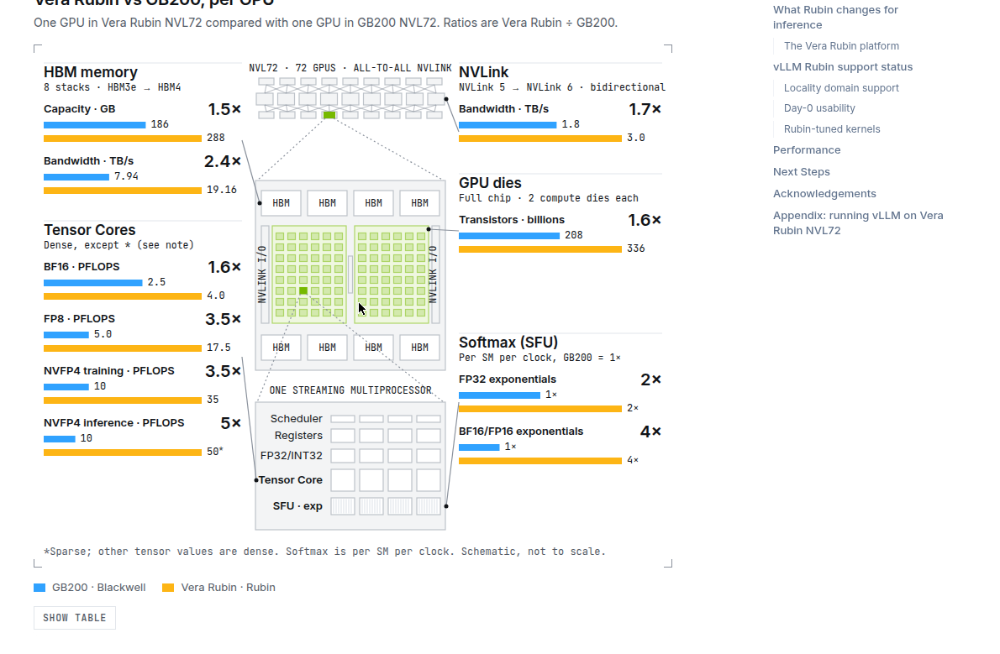
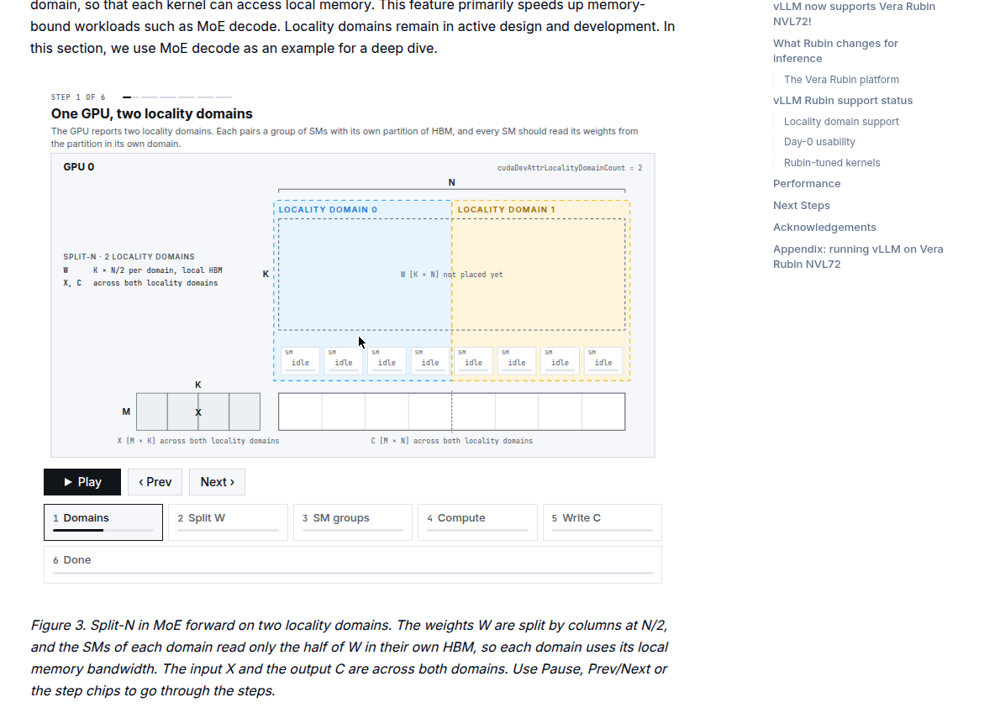
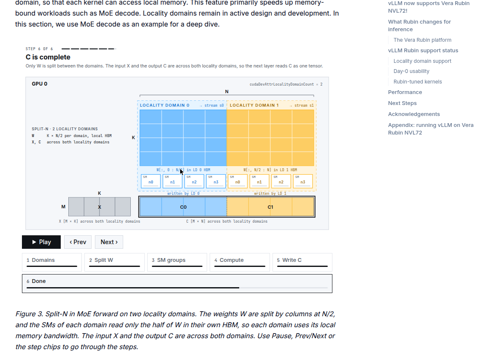
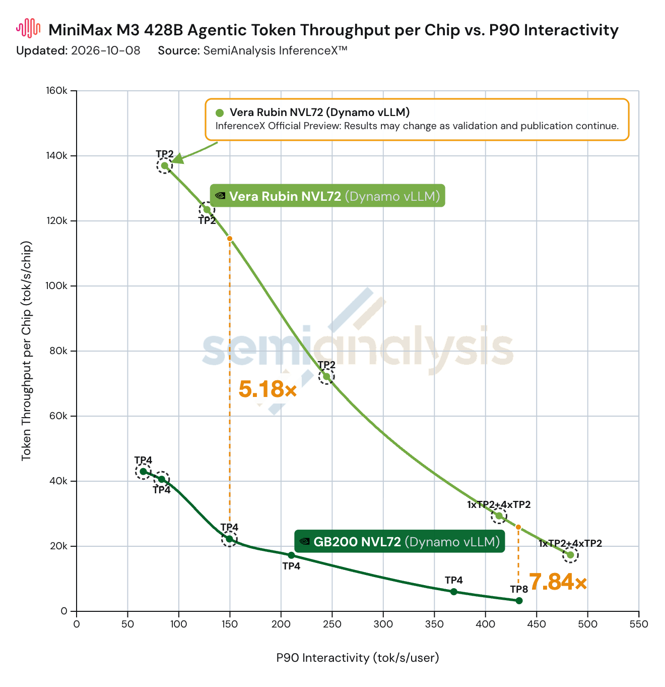

NVIDIA Vera Rubin发布后，Inferact、NVIDIA、Red Hat和vLLM社区就开始把vLLM往Vera Rubin NVL72上搬。现在daily容器有了，DeepSeek、Kimi、GLM、MiniMax的模型都能跑。早期成绩：AgentX上每GPU吞吐是GB200 NVL72的7.8倍。
单卡对比：NVFP4推理FLOPS 5倍，HBM从HBM3e升到HBM4、带宽2.4倍（8到19.2 TB/s），NVLink从第5代到第6代、双向带宽1.7倍（1.8到3 TB/s）。Softmax的指数吞吐也提了：FP32 2倍，BF16/FP16 4倍，跟得上更快的矩阵运算。
张量核：BF16 1.6倍，FP8 3.5倍，NVFP4训练3.5倍、推理5倍。晶体管1.6倍。交互图里hover每个指标会高亮GPU对应部位，Show table列全部数值。

Rubin平台是机架级协同设计，五套专用系统：Vera Rubin NVL72、Vera CPU机架、Groq 3 LPX、Spectrum-6 SPX、BlueField-4 STX存储。单台NVL72的NVFP4推理FLOPS是GB200的5倍，内存带宽2.4倍。第六代NVLink让集合通信（AllReduce、All2all）更快，prefill/decode分离、大专家并行都受益。
Ampere起NVIDIA GPU就有非均匀全局内存访问。CUDA 13.4的locality domain让应用把计算和数据放在同一域里：SM读本域HBM带宽更高、延迟更低。配Green Contexts和CUDA stream，每个域起一个kernel，各读各的本地内存。MoE decode正好吃这一口，因为瓶颈在读权重。
做法是split-N：FC1和FC2的权重按列切两半，每半放一个域的全局内存，各域SM只读自己那半，跨域访问基本消除。激活内存decode时小，不做本地化开销可忽略。SM不一定能等分，默认只用到200个，开cudaDevSmResourceGroupBackfill能用满212个。


MiniMax M3的MoE形状实测：开locality domain，小token前向平均快1.2倍，TP2/TP4/EP2/EP4趋势一致。默认模式（200 SM）增益也差不多，因为小token decode就是权重搬运主导，本地化直接提HBM吞吐。这只是起点，还有调优空间。
Rubin基于Blackwell架构家族，sm100f编译的kernel能直接跑（新目标是sm107，tcgen05指令有扩展）。vLLM的Blackwell kernel尤其是GEMM类的注意力和MoE，不改就能上Rubin。nightly镜像vllm/vllm-openai:cu134-nightly（CUDA 13.4、PyTorch 2.15）直接拉来用。
Rubin特调kernel通过FlashInfer 0.7.0进来：dense NVFP4/MXFP4 GEMM、NVFP4 MoE、FP8 attention、FP8 MSA prefill等。MiniMax稀疏注意力（MSA）的prefill kernel也按Rubin调过。附录给了各kernel的开启参数。
AgentX上跑MiniMax M3：相同交互性下每GPU吞吐是GB200的7.84倍，150 TPS约束下5.18倍。MLPerf Inference v6.1是vLLM第一次上Rubin NVL72的公开测试，Qwen3-VL-235B-A22B的VLM榜上，offline、server、interactive三场景吞吐都是GB300 NVL72的3.7倍。
后续计划：FlashInfer的sm107 MegaMoE进vLLM、locality domain全量用于MoE层、PDL和Lamport Sync挖层间重叠、mega kernel搞延迟敏感场景、Kimi K3的KDA/MLA在Rubin上调优、DeepSeek-V4.1-Flash的CSA/HCA kernel、MSA decode kernel收尾、CFT counted-write MoE all-to-all进FlashInfer。

参考：https://vllm.ai/blog/2026-10-09-vera-rubin-preview